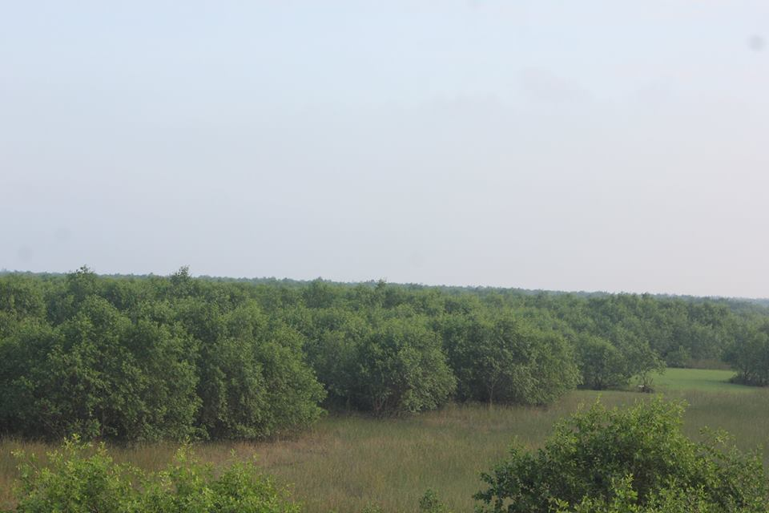
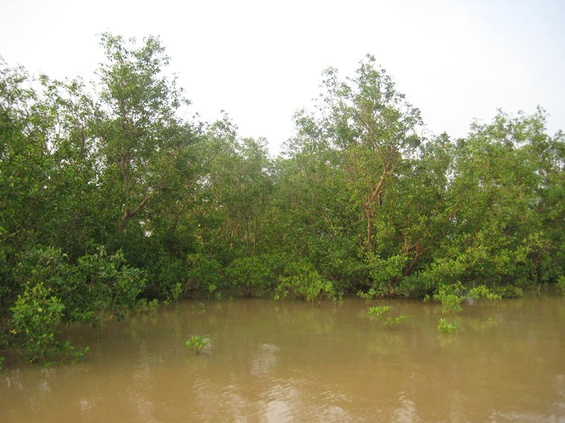
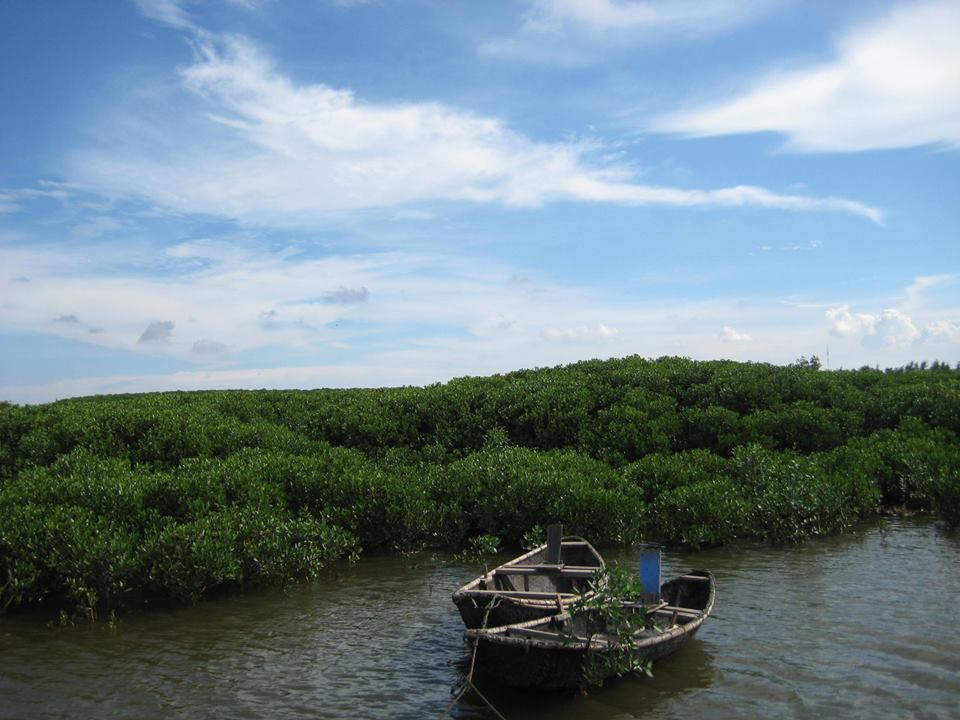
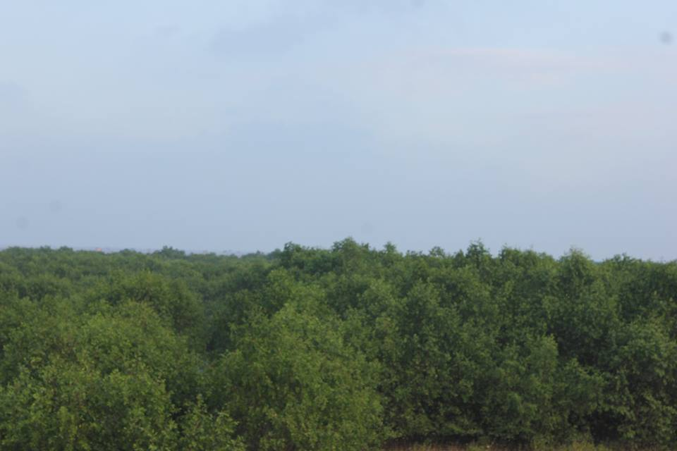
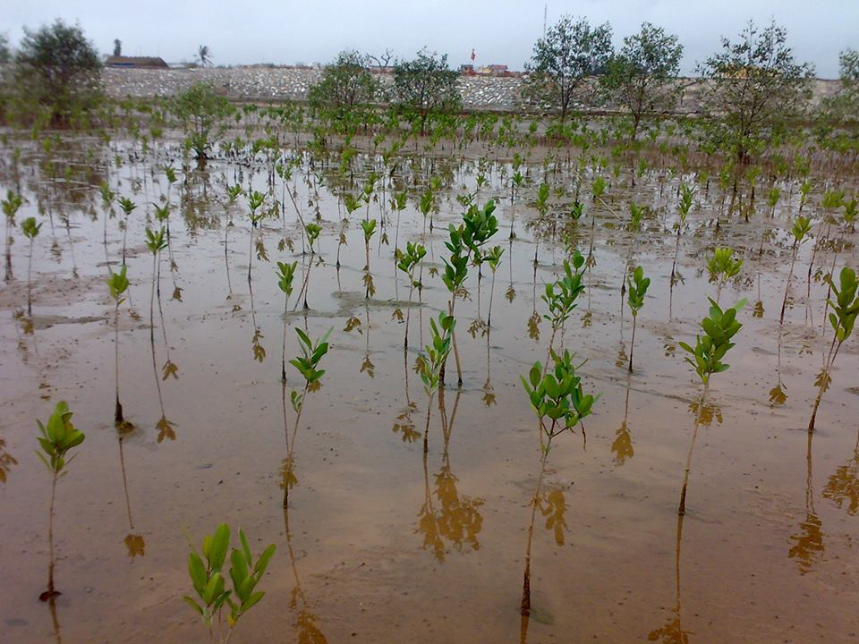

Một số hình ảnh về rừng ngập măn tại Tỉnh Thái Bình

Rừng Bần thuần loài Đông Long

Rừng hỗn giao Trang bần Đông Long

Rừng Trang thuần loài Nam Hưng

Rừng Trang Thụy Hải

Rừng trồng hỗn giao Đông Long

Rừng trồng được 1 năm tuổi